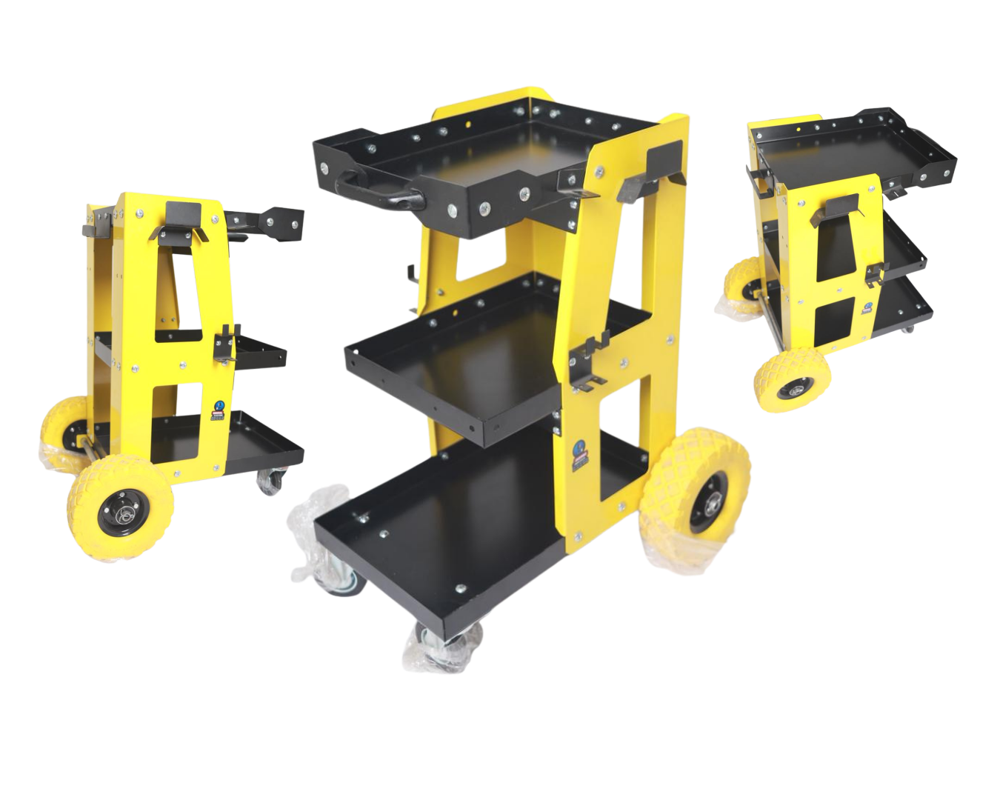
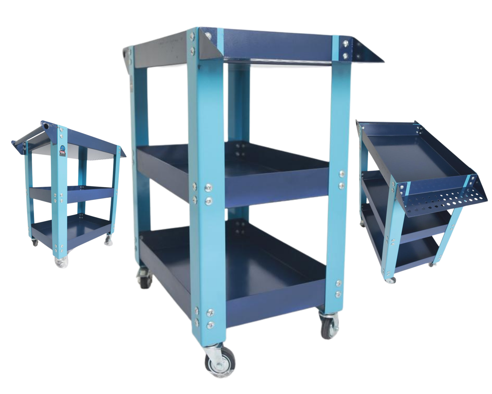

| Dimensions (LxlxH) | 70 x 36 x 81 cm |
| Capacité de charge | 80 kg |
| Plateaux | 3 larges plateaux en acier [cite: 56] |
| Roues | 2 grandes (250mm) + 2 pivotantes avec freins [cite: 46, 58] |
| Supports | 6 supports d'accrochage différents |
| Finition | Revêtement époxy (Jaune vif/Noir) |
Idéal pour organiser vos outils (perceuses, clés, tournevis) avec une mobilité extrême sur tous terrains[cite: 57, 58].
Demander Devis
| Dimensions (LxlxH) | 81 x 41 x 82 cm |
| Capacité de charge | Jusqu'à 100 kg [cite: 71, 81] |
| Poids Net | 25 KG |
| Roues | 4 roues 70mm (2 pivotantes avec freins) [cite: 74, 83] |
| Surfaces | 3 grandes surfaces avec rebord anti-chute [cite: 81] |
| Finition | Peinture bicolore résistante aux produits chimiques [cite: 74, 88] |
Parfait comme chariot de service ou transport pour outils et pièces de rechange en atelier ou garage[cite: 77, 81].
Demander Devis